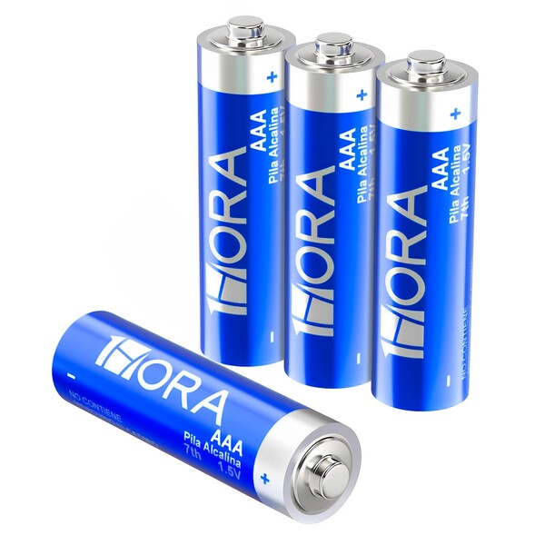
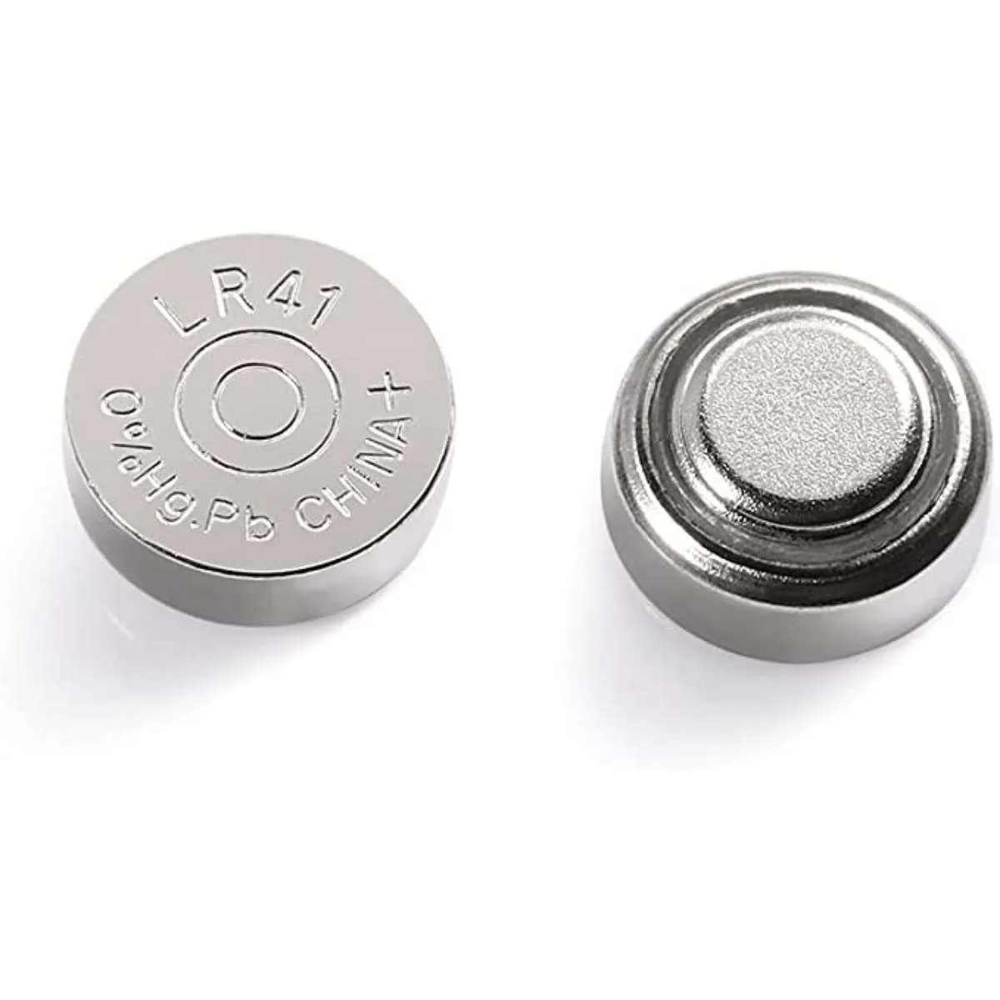
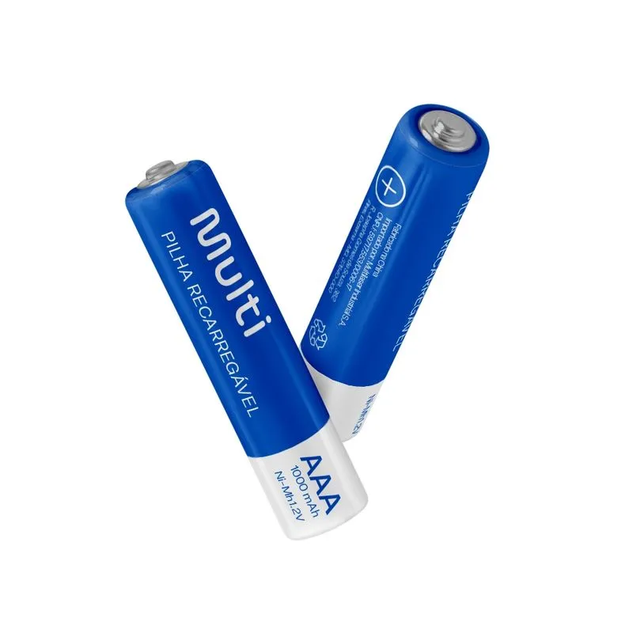

Tipos de Pilhas
Descubra três modelos muito usados nos dias atuais.
Passe o cursor sobre os cards para conhecer cada um!

Pilha Alcalina
As pilhas alcalinas são uma evolução das pilhas comuns. Utilizam um eletrólito
alcalino, o que lhes dá maior duração e melhor desempenho.
São muito usadas
em
aparelhos do dia a dia, como brinquedos, lanternas, controles remtos e outros
dispositivos
portáteis.
Além de serem práticas, ofercem uma corrente elétrica mais estável e
duram
mais tempo que as pilhas comuns.

Pilha Mercúrio
As pilhas de mercúrio eram usadas em relógios, calculadoras e aparelhos médicos,
mas foram abandonadas porque o mercúrio é altamente tóxico e polui o meio ambiente.
Nos dias atuais, elas foram substituídas por pilhas de lítio, que são mais
seguras, duram mais e são utilizadas em celulares, notebooks e entre outros dispositivos
modernos.

Pilha Recarregável
As pilhas recarregáveis podem ser usadas várias vezes, pois basta conectá-las a
um
carregador para recuperar a energia. Elas ajudam a reduzir o lixo e são mais econômicas.
São muito utilizadas em câmeras digitais, aparelhos médicos e principalmente
em notebooks e celulares.
Benefícios da Reciclagem de Pilhas
Oferece inúmeros benefícios, tanto para o meio ambiente quanto para a sociedade.
Alguns dos principais benefícios incluem:
Redução da poluição: ao reciclar, evitamos
que substâncias tóxicas sejam liberadas no meio ambiente, o que ajuda a proteger a qualidade do solo
e das fontes de água.
Economia de recursos naturais: permite a recuperação de
metais valiosos, como chumbo, zinco e lítio , que podemm ser reutilizados em vez de serem extraídos
novamente da natureza. Isso reduz a demanda por mineração, que é uma atividade extremamente poluente.
Redução do volume de resíduos: diminui a quantidade de resíduos que são enviados para os aterros
sanitários , ajudando a aliviar a pressão sobre esses locais.
Incentivo à sustentabilidade: também
contribui para a conscientização sobre a importância da sustentabilidade. Ao participar desse processo,
você está ajudando a criar um futuro mais limpo e sustentável para as próximas gerações. (ECOERA, Reciclagem de
Pilhas) .